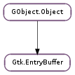

| Subclasses: | GcrUi.SecureEntryBuffer |
|---|
| static | new(initial_chars, n_initial_chars) |
| delete_text(position, n_chars) | |
| emit_deleted_text(position, n_chars) | |
| emit_inserted_text(position, chars, n_chars) | |
| get_bytes() | |
| get_length() | |
| get_max_length() | |
| get_text() | |
| insert_text(position, chars, n_chars) | |
| set_max_length(max_length) | |
| set_text(chars, n_chars) |
| Name | Type | Flags | Description |
|---|---|---|---|
| length | int | r | Length of the text currently in the buffer |
| max-length | int | r/w | Maximum number of characters for this entry. Zero if no maximum |
| text | str | r/w | The contents of the buffer |
| Name | Parameters | Return | Description |
|---|---|---|---|
| deleted-text | int, int | This signal is emitted after text is deleted from the buffer. | |
| inserted-text | int, str, int | This signal is emitted after text is inserted into the buffer. |
| Name | Type | Access |
|---|---|---|
| parent_instance | GObject.Object | r |
Bases: GObject.Object
The Gtk.EntryBuffer class contains the actual text displayed in a Gtk.Entry widget.
A single Gtk.EntryBuffer object can be shared by multiple Gtk.Entry widgets which will then share the same text content, but not the cursor position, visibility attributes, icon etc.
Gtk.EntryBuffer may be derived from. Such a derived class might allow text to be stored in an alternate location, such as non-pageable memory, useful in the case of important passwords. Or a derived class could integrate with an application’s concept of undo/redo.
| Parameters: | |
|---|---|
| Returns: | A new Gtk.EntryBuffer object. |
| Return type: |
Create a new Gtk.EntryBuffer object.
Optionally, specify initial text to set in the buffer.
| Parameters: | |
|---|---|
| Returns: | The number of characters deleted. |
| Return type: |
Deletes a sequence of characters from the buffer. n_chars characters are deleted starting at position. If n_chars is negative, then all characters until the end of the text are deleted.
If position or n_chars are out of bounds, then they are coerced to sane values.
Note that the positions are specified in characters, not bytes.
| Parameters: |
|---|
Used when subclassing Gtk.EntryBuffer
| Parameters: |
|---|
Used when subclassing Gtk.EntryBuffer
| Returns: | The byte length of the buffer. |
|---|---|
| Return type: | int |
Retrieves the length in bytes of the buffer. See Gtk.EntryBuffer.get_length ().
| Returns: | The number of characters in the buffer. |
|---|---|
| Return type: | int |
Retrieves the length in characters of the buffer.
| Returns: | the maximum allowed number of characters in Gtk.EntryBuffer, or 0 if there is no maximum. |
|---|---|
| Return type: | int |
Retrieves the maximum allowed length of the text in buffer. See Gtk.EntryBuffer.set_max_length ().
| Returns: | a pointer to the contents of the widget as a string. This string points to internally allocated storage in the buffer and must not be freed, modified or stored. |
|---|---|
| Return type: | str |
Retrieves the contents of the buffer.
The memory pointer returned by this call will not change unless this object emits a signal, or is finalized.
| Parameters: | |
|---|---|
| Returns: | The number of characters actually inserted. |
| Return type: |
Inserts n_chars characters of chars into the contents of the buffer, at position position.
If n_chars is negative, then characters from chars will be inserted until a null-terminator is found. If position or n_chars are out of bounds, or the maximum buffer text length is exceeded, then they are coerced to sane values.
Note that the position and length are in characters, not in bytes.
| Parameters: | max_length (int) – the maximum length of the entry buffer, or 0 for no maximum. (other than the maximum length of entries.) The value passed in will be clamped to the range 0-65536. |
|---|
Sets the maximum allowed length of the contents of the buffer. If the current contents are longer than the given length, then they will be truncated to fit.
| Parameters: |
|---|
Sets the text in the buffer.
This is roughly equivalent to calling Gtk.EntryBuffer.delete_text () and Gtk.EntryBuffer.insert_text ().
Note that n_chars is in characters, not in bytes.